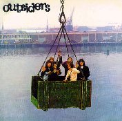
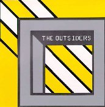
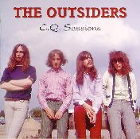
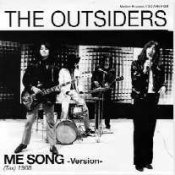

 Outsiders
(1994 - CD - Pseudonym - CDP-1021-DD) Netherlands
-
Story 16
-
Tears are falling from my eyes
-
Ain't gonna miss you
-
I wish I could
-
Afraid of the dark
-
Teach me to forget you
-
Filthy rich
-
I would love you
-
Don't you cry
-
Won't you listen
-
If you don't treat me right
Bonus Tracks:
-
Lying all the time
-
Thinking about today
-
Keep on trying
-
That's your problem
-
Touch (previously unreleased stereo versions)
-
Bird in a cage (previously unreleased stereo versions)
Notes:
This CD-only release features the Outsiders' first album on Relax plus some
songs from the Relax singles.
 C.Q. (Complete
Polydor Tapes)
(1993 - CD - Pseudonym - CDP-1005-DD) Netherlands
-
Misfit
-
Zsarrahh
-
C.Q.
-
Daddy died on saturday
-
It seems like nothing's gonna come my way today
-
Doctor
-
The man on the dune
-
The bear
-
Happyville
-
You're everything on earth
-
Wish you were here with me today
-
I love you no. 2
-
Prisonsong
Bonus Tracks:
-
I don't care
-
You remind me
-
Do you feel allright
-
Amsterdam (by Tax Free)
-
Evening (by Tax Free)
Notes:
This CD-only release features the C.Q. album, all the Polydor non-LP singles
tracks plus two songs by TAX FREE, Wally Tax's post-Outsiders project.
 C.Q. Sessions
(1994 - 2CD - Pseudonym - CDP-1010-DD) Netherlands
-
Instrumental "space" demo
-
M.E. song
-
Instrumental outtake
-
plus other 26 featuring alternative takes from the C.Q. sessions
Bonus Tracks:
-
Lying all the time (Demo)
-
You mistreat me (Remastered from the original record)
-
Sun's going down (Remastered from the original record)
-
Felt like I wanted to cry (Remastered from the original record)
-
I love her still, I always will (Remastered from the original record)
Notes:
This posthumous Double CD-only release features alternative and "demo" versions
of the C.Q. songs. Some are instrumental only.
It also features the first two singles, originally on Muziek Express.
"Instrumental Space Demo", "M.E. Songs" and "Instrumental Outtake" were
originally left unreleased.
Both CDs feature 17 tracks plus an unlisted 18th track
 M.E. Song
(1994 - 7" - Monkey Businnes (I go ape) - F004) Netherlands
Notes:
One-sided flexi |